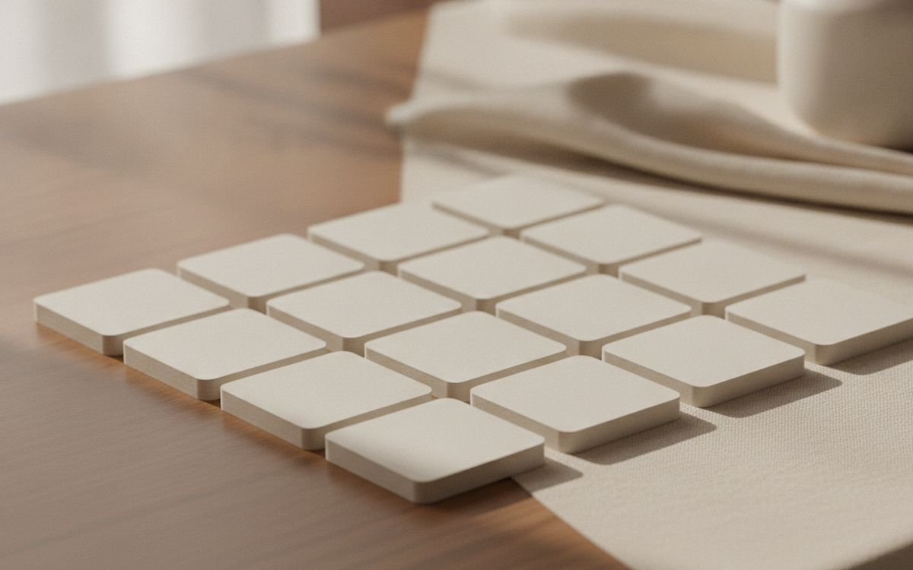
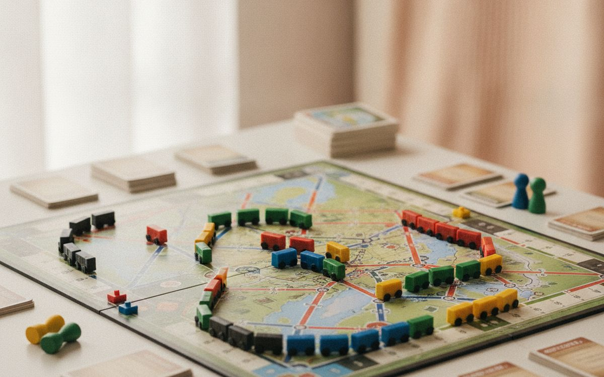
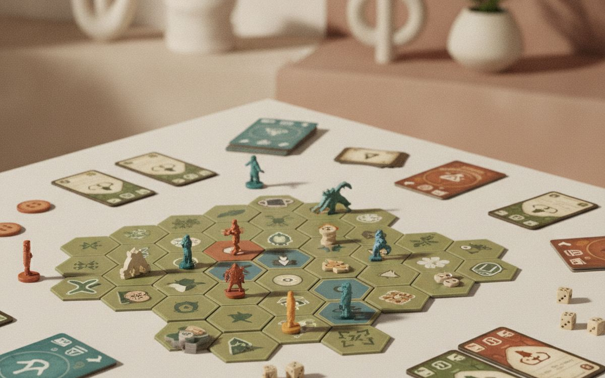
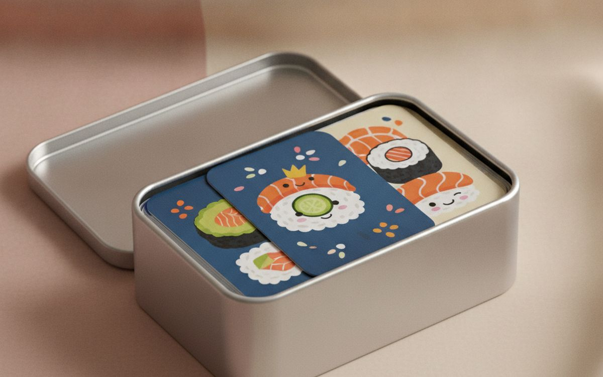
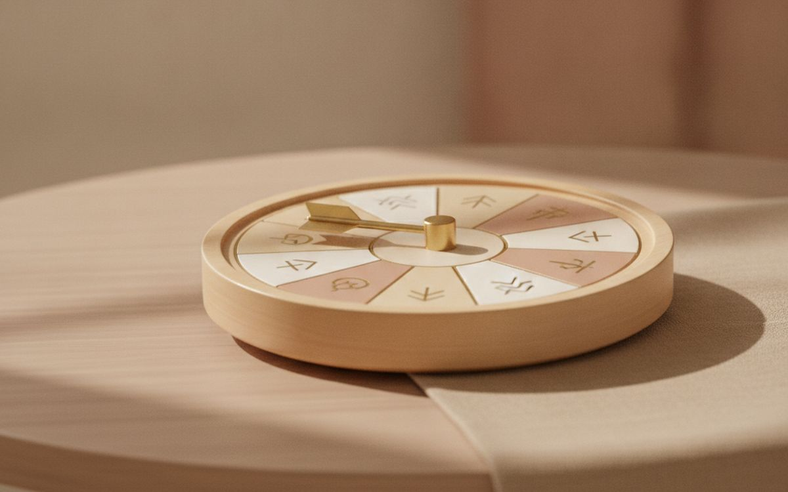
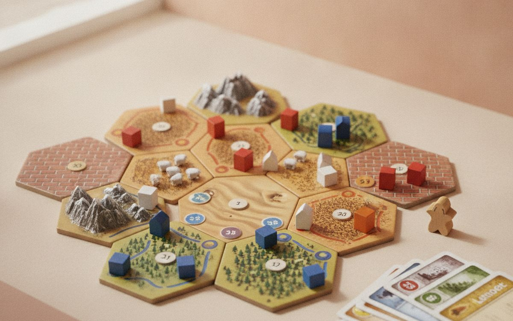
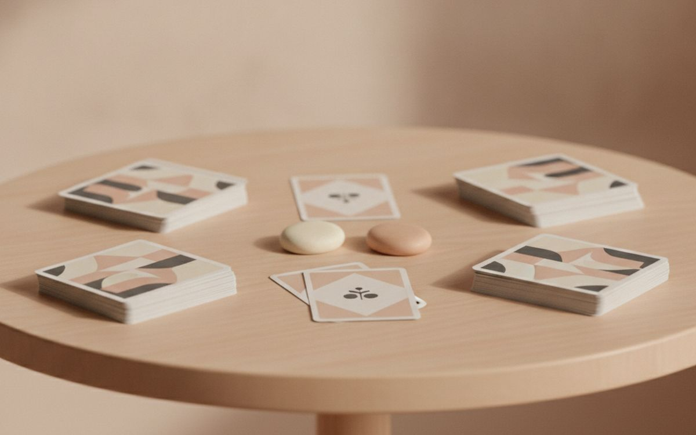
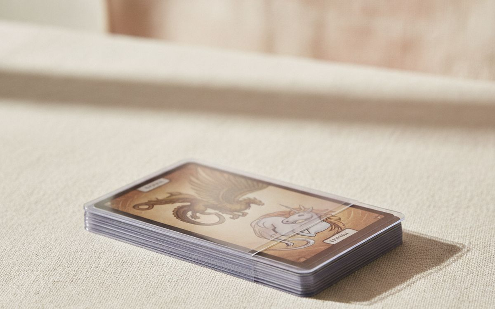
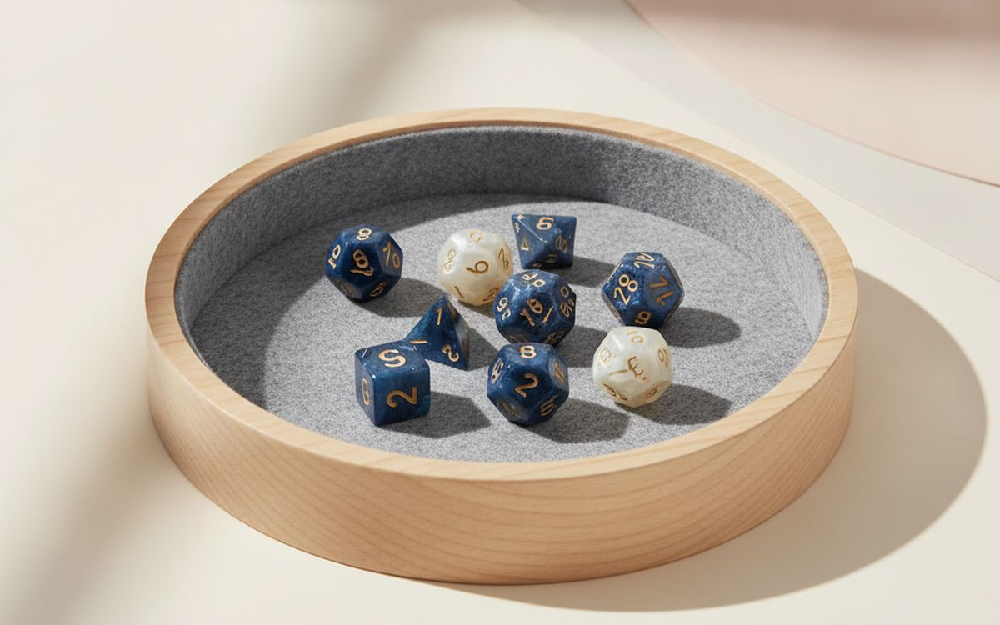
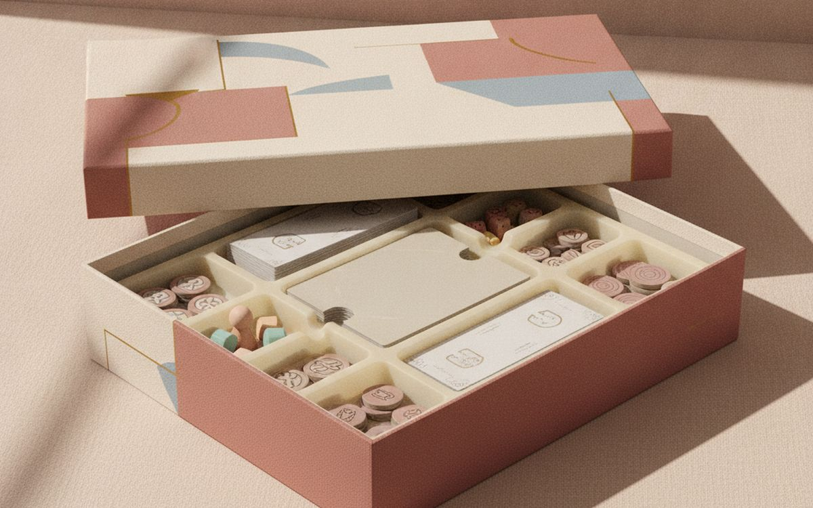

Board game night fails when the game is too long, the rules take forty minutes to explain, or half the table is waiting for their turn. Enthusiast rankings are full of brilliant games that most groups will never finish. What works for friends and family is different: short rules, lots of interaction, and games where everyone is involved every turn.
This list is ordered by how often each pick gets played with a mixed group. Quick party games and gateway games come first. A few accessories at the end make any game night run smoother.
Prices below are approximate street prices at the time of writing and move around constantly, especially during sale events. Treat them as a rough band for budgeting, not a quote. Always check the live listing before you buy.
En bref
Codenames or a similar team word game
The game that gets played every time
Transparence. Les liens de cette page sont des liens affiliés. Si vous achetez via l’un d’eux, nous pouvons percevoir une commission sans surcoût pour vous. Cela n’influence ni le contenu de cette liste ni son ordre.
Comment nous avons choisi
These picks come from board game communities, published reviews and long-run owner reports, cross-checked against current retail listings. We have not personally tested every item here. Counterfeit copies of popular games are common on marketplaces; buy from official stores and check reviews for print quality.
En un coup d’œil
Les prix sont indicatifs au moment de la rédaction et changent souvent.
Notre sélection

01 · The game that gets played every timeCodenames or a similar team word game
Codenames works with four to eight people, teaches in two minutes and plays in fifteen. Two teams try to guess their words from one-word clues, and the table is loud from the first round. It works for families, work socials and friends who say they do not like board games. There are picture versions, which are good for kids and mixed languages. It is the most reliable game-night opener there is. The case for it: teaches in two minutes, great with large groups, and works for non-gamers. The trade-off is real: less fun with fewer than four and clue-givers can take long turns, so weigh that against how often it would actually get used.
$15-25Le compromis: Less fun with fewer than four
Pourquoi il est là
- Teaches in two minutes
- Great with large groups
- Works for non-gamers
Bon à savoir
- Less fun with fewer than four
- Clue-givers can take long turns

02 · The best gateway gameTicket to Ride
Ticket to Ride is often the game that turns casual players into board game fans. Players collect coloured train cards and claim routes across a map. The rules fit on one page, games take about an hour, and it suits ages 8 and up. There are many maps; the original US map is the easiest start. The case for it: simple rules, satisfying play, and suits families. The trade-off is real: best with three to five players and can feel repetitive after many plays, so weigh that against how often it would actually get used.
$40-55Le compromis: Best with three to five players
Pourquoi il est là
- Simple rules
- Satisfying play
- Suits families
Bon à savoir
- Best with three to five players
- Can feel repetitive after many plays

03 · Groups who dislike competitionA cooperative game like Pandemic
In cooperative games, everyone plays against the game rather than each other. In Pandemic, players work together to stop diseases spreading. It is great for groups where competition gets tense, and for couples. One experienced player can dominate the decisions, so encourage everyone to take their own turns. The case for it: everyone wins or loses together, less tension, and great for couples. The trade-off is real: one player can take over and hard to beat on higher difficulty, so weigh that against how often it would actually get used. Priced around $30-45, it is easy to justify even if it only ends up getting occasional rather than daily use.
$30-45Le compromis: One player can take over
Pourquoi il est là
- Everyone wins or loses together
- Less tension
- Great for couples
Bon à savoir
- One player can take over
- Hard to beat on higher difficulty

04 · Fast games for all agesSushi Go! or a quick card game
Small card games like Sushi Go! teach in minutes, play in fifteen and fit in a pocket. Players pick cards and pass the rest, building sets. It works for kids and adults and is perfect for the start or end of a night, or travelling. The case for it: quick and cheap, all ages, and travels well. The trade-off is real: light for experienced gamers and small tins lose cards easily, so weigh that against how often it would actually get used. At $10-15, it earns its place on this list without asking for a big up-front commitment either way.
$10-15Le compromis: Light for experienced gamers
Pourquoi il est là
- Quick and cheap
- All ages
- Travels well
Bon à savoir
- Light for experienced gamers
- Small tins lose cards easily

05 · Big groups and laughsWavelength or a party guessing game
Party games like Wavelength get big groups talking and laughing. Teams guess where on a spectrum a clue falls, which leads to wonderful arguments. Good for parties of up to about twelve. The fun comes from the people rather than the rules. The case for it: great for big groups, easy to learn, and lots of conversation. The trade-off is real: less fun with small groups and depends on the group's energy, so weigh that against how often it would actually get used. For $25-40, it is a small, low-risk addition to the list rather than a centrepiece purchase you need to think hard about.
$25-40Le compromis: Less fun with small groups
Pourquoi il est là
- Great for big groups
- Easy to learn
- Lots of conversation
Bon à savoir
- Less fun with small groups
- Depends on the group's energy

06 · The modern classicCatan
Catan introduced millions of people to modern board games. Players gather resources, trade and build settlements. It has more trading and table talk than most games, but it runs long with slow players, and dice luck can decide games. Still a favourite for regular groups of three or four. The case for it: lots of trading and interaction, classic for a reason, and many expansions. The trade-off is real: dice luck can frustrate and runs long with four players, so weigh that against how often it would actually get used. Priced around $40-55, it is easy to justify even if it only ends up getting occasional rather than daily use.
$40-55Le compromis: Dice luck can frustrate
Pourquoi il est là
- Lots of trading and interaction
- Classic for a reason
- Many expansions
Bon à savoir
- Dice luck can frustrate
- Runs long with four players

07 · Couples and pairsA two-player game like Jaipur
Many games are weaker with two players. Games designed for two, like Jaipur, Patchwork or 7 Wonders Duel, are tight and fast. Jaipur is a quick trading card game that plays in 20 minutes. Good for weeknights and travel. The case for it: designed for two, quick, and great for couples. The trade-off is real: only for two players and small components, so weigh that against how often it would actually get used. At $15-25, it earns its place on this list without asking for a big up-front commitment either way. As with anything on this list, check the exact listing details and current price before adding it to a cart.
$15-25Le compromis: Only for two players
Pourquoi il est là
- Designed for two
- Quick
- Great for couples
Bon à savoir
- Only for two players
- Small components

08 · Protecting favourite gamesCard sleeves
Cards in popular games wear and get bent, sticky or marked. Clear sleeves protect them for years of play. Check the card size for your game; sizes vary. Only worth it for card-heavy games you play often. The case for it: protects cards, keeps games looking new, and cheap. The trade-off is real: sleeved cards may not fit back in the box and must match card size, so weigh that against how often it would actually get used. For $8-15, it is a small, low-risk addition to the list rather than a centrepiece purchase you need to think hard about.
$8-15Le compromis: Sleeved cards may not fit back in the box
Pourquoi il est là
- Protects cards
- Keeps games looking new
- Cheap
Bon à savoir
- Sleeved cards may not fit back in the box
- Must match card size

09 · Keeping pieces togetherA game night tray or dice tray
A felt dice tray keeps dice from rolling off the table and knocking over pieces. Trays for components speed up setup and play. A small, cheap upgrade that makes game night feel tidier. The case for it: dice stay on the table, quieter rolling, and tidy play. The trade-off is real: one more thing to store and leather ones can smell at first, so weigh that against how often it would actually get used. Priced around $15-30, it is easy to justify even if it only ends up getting occasional rather than daily use.
$15-30Le compromis: One more thing to store
Pourquoi il est là
- Dice stay on the table
- Quieter rolling
- Tidy play
Bon à savoir
- One more thing to store
- Leather ones can smell at first

10 · Faster setupBox organiser inserts
Many games come with an empty box and a pile of plastic bags. Inserts or organisers sort pieces so setup takes minutes instead of twenty. Worth it for games you play often. The case for it: faster setup and packing, protects pieces, and makes games easier to bring out. The trade-off is real: some require assembly and must fit the specific game, so weigh that against how often it would actually get used. At $15-40, it earns its place on this list without asking for a big up-front commitment either way. As with anything on this list, check the exact listing details and current price before adding it to a cart.
$15-40Le compromis: Some require assembly
Pourquoi il est là
- Faster setup and packing
- Protects pieces
- Makes games easier to bring out
Bon à savoir
- Some require assembly
- Must fit the specific game
Questions fréquentes
What is the best board game for non-gamers?
Codenames, Ticket to Ride or a quick card game like Sushi Go!.
What games work for large groups?
Codenames, Wavelength and other party games work well with six or more.
Are cooperative games good for families?
Yes. Everyone works together, which suits mixed ages.
How do I avoid fake board games?
Buy from official stores and check reviews mentioning print quality and missing pieces.
Les offres du jour
Voyez ce qui est en promotion en ce moment.
Offres →← Tous les guides
En tant que affilié AliExpress, nous percevons une commission sur les achats éligibles. Les prix et la disponibilité sont exacts à la date de publication et peuvent changer.